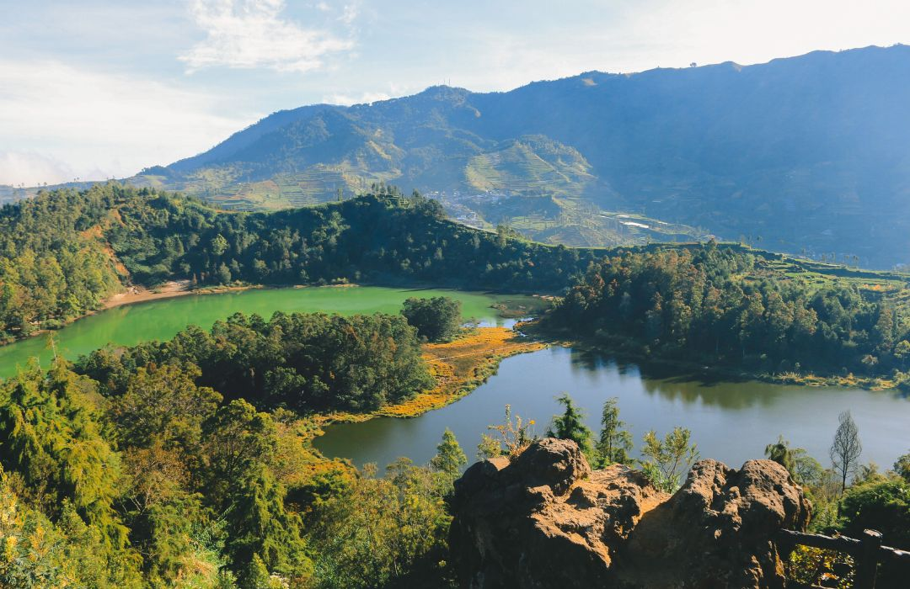

Perjalanan ke Dieng: Negeri di Atas Awan
Dieng Plateau, yang sering dijuluki sebagai “Negeri di Atas Awan”, merupakan salah satu kawasan dataran tinggi paling memukau di Indonesia. Perjalanan menuju Dieng biasanya dimulai dengan melewati jalur pegunungan yang berliku, tetapi sesampainya di sana, seseorang akan disambut oleh udara dingin yang menusuk dan hamparan kabut tipis yang menari-nari di sekitar perbukitan. Keindahan alam Dieng terasa sangat khas karena pemandangannya yang dramatis—mulai dari bukit-bukit hijau, telaga berwarna, hingga kawah aktif yang memancarkan uap putih. Semuanya berpadu menjadi pengalaman visual yang sulit dilupakan oleh siapa pun yang datang ke sana.
Salah satu momen paling terkenal dan paling dinanti wisatawan adalah menikmati matahari terbit di Bukit Sikunir. Banyak pengunjung rela bangun pagi sekali, bahkan sebelum subuh, lalu mendaki bukit yang cukup terjal untuk sampai ke puncaknya. Namun, rasa lelah itu terbayar lunas ketika cahaya matahari perlahan muncul di balik deretan pegunungan. Warna keemasan yang menyebar ke seluruh langit menciptakan pemandangan yang begitu magis, seolah-olah alam sedang menunjukkan salah satu pertunjukan terbaiknya. Momen tersebut sering dianggap sebagai pengalaman berharga yang memberikan kesan mendalam bagi para pelancong.